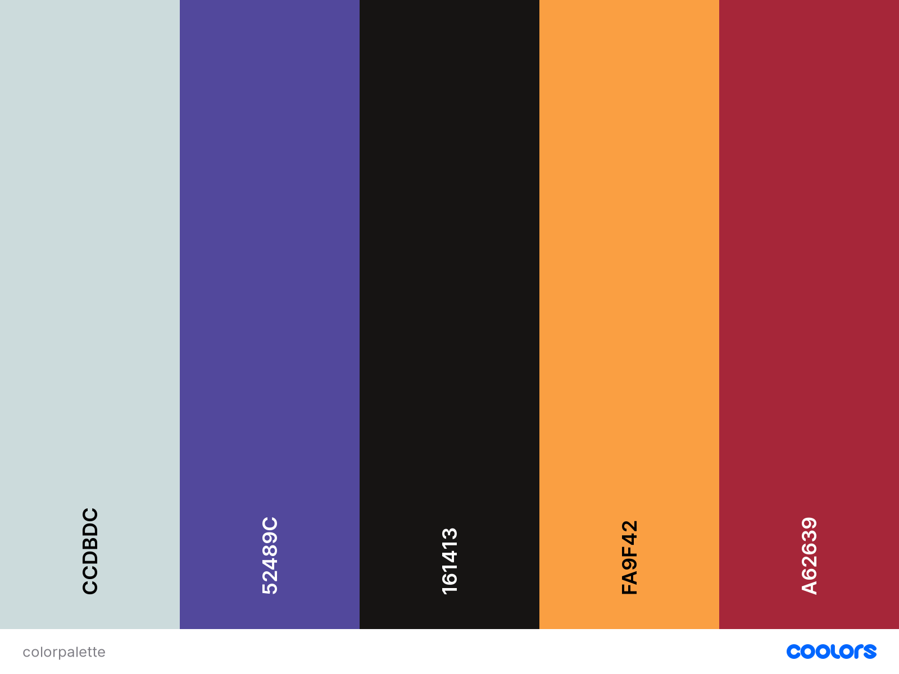

Color Scheme
"Light Gray" is the background color for the site. It's blue enough to convey a sky-like feeling, but muted enough to not be distracting. It's also used as the text color in the header and footer to seem like the letters are cut away from the background.
"Plump Purple" is the primary accent color and is used as the background for the header/footer as well as links across the site.
"Smoky Black" is the main text color for the site. It's basic but instantly readable and a safe choice.
"Deep Saffron" is the secondary accent color. It's used in the nav bar and the background for sections that are meant to stand out.
"Crimson UA" is a tertiary accent color. It's used as the visited link color and for small accents.